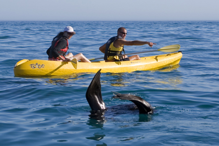

“Keep close to Nature’s heart… and break clear away, once in a while, and climb a mountain or spend a week in the woods. Wash your spirit clean.” –John Muir
Camping
Badensfontein, Montagu
Badensfontein is a cozy camping site at the foot of the Waboomsberg with panoramic views of the Langeberg Mountain Range, orchards and vineyards.

Secret Falls Tulbagh
Holiday farm just 100 km's from Cape Town so ideal for a weekend getaway from the hustle and bustle. Hiking to our waterfalls and exploring our fynbos, with spectacular views.
Canoeing
Kaskazi Kayaks and Adventures, Cape Town
Breathtaking kayak experiences in the home of the Haviside's dolphin, set against the stunning backdrop of Table Mountain, Cape Town.

Walker Bay Adventures, Hermanus
At Walker Bay Adventures, we offer sea kayaking trips with sightings of dolphins, whales, seals, penguins and sea birds in a marine reserve.
Climbing

Towerkop Rock Climbing, Ladysmith
More than 100 traditional routes. There are no bolts at all. This is not a sport area & no bolts what so ever should be placed. This is a situation where there are bad men who will do something. There are numerous sport lines at Waterkloof, Oudtshoorn & Montagu.

Paarl Rock Climbing, Paarl
There are some excellent single- and multi-pitch sport routes at Paarl Rocks. The climbing is on large granite domes. The rock readms to dry quicker than the sandstone crags around Cape Town, so Paarl Rocks may be a good destination if it has been raining recently.
Fishing

Hooked on Africa Fishing Charters, Hout Bay
Hooked on Africa Fishing Charters in Hout Bay offer private, corporate and incentive driven packages incorporating Deep Sea Fishing, Game Fishing and Fly Fishing by experienced skippers and guides using quality tackle and well appointed boats.

Deep Sea Fishing, Mossel Bay
For deep sea fishing in Mossel Bay there is no team better than GoFish Mossel Bay Deepsea Fishing Charters. A fleet of 2 Butt Cat fishing charter boats, SAMSA safety registered, operate from the Mossel Bay fishing harbour when the weather allows.
Hiking

Cederberg Wilderness Trail, Clanwilliam
Burnt orange by iron oxide, dominate the landscape. Jagged sandstone rock formations, like the Maltese Cross and the Wolfberg Arch, and ancient San and Khoi rock art, make this area truly spectacular.

Outeniqua Trail, Garden Route
This spectacular trail can be conquered asa series of day walks or over a full seven day period, starting at Beervlei in the upper reaches of the Park and ending at Harkerville in the East between Knysna and Plettenberg Bay.
Hunting

Rietfontein Game Reserve, Beaufort West
Rietfontein is in the Great Karoo and is located in the Prince Albert district, Western Cape, South Africa and is the closest dedicated plains game hunting facility to Cape Town, a 4.5hr drive away.

Hattingh Safari, Murraysburg
Based in a picturesque town, situated at the foot of Sneeuberg mountain range in the Western Cape, South Africa. Professional hunters and outfitters in the Western and Eastern Cape.